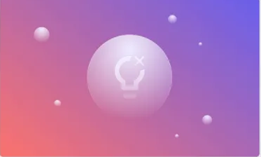

Blog Post 1
AI is revolutionizing UI and design by making the creative process faster, smarter, and more intuitive. With tools powered by artificial intelligence, designers can instantly generate layouts, suggest color schemes, optimize user flows, and even create entire interfaces from simple prompts. This not only saves time but also empowers anyone—from beginners to pros—to craft stunning, user-friendly designs with ease.

Power of Ai on Photos
AI is redefining what’s possible with photos. From automatic background removal and intelligent retouching to enhancing low-quality images and generating entirely new visuals, AI tools make advanced photo editing accessible to everyone. Creators can now manipulate lighting, style, and even facial expressions in seconds, empowering both professionals and hobbyists to produce stunning visuals with ease.
Power of Ai on Graphs
AI is transforming how we visualize data through intelligent graph generation. Instead of manually designing complex charts, AI can instantly analyze datasets and suggest the most effective visual formats — from interactive dashboards to dynamic graphs that update in real time. It uncovers hidden patterns, simplifies trends, and turns raw numbers into compelling, decision-driving visuals with minimal effort.
Power of Ai on Layout
AI is revolutionizing website design by automatically generating layouts that are both beautiful and functional. By analyzing content, user behavior, and best UX practices, AI can create responsive, optimized page structures in seconds. Whether you're building a landing page, e-commerce site, or blog, AI ensures your layout is clean, intuitive, and conversion-focused — no design skills required.
The Power of AI on Multithreading
AI is enhancing multithreading by optimizing how tasks are distributed and executed across processor cores. Instead of relying on rigid logic, AI can predict workloads, dynamically balance threads, and reduce bottlenecks in real time. This leads to faster, more efficient software that adapts to system demands — whether it’s gaming, data processing, or high-performance computing.
The Power of AI on UX
AI is revolutionizing user experience by making digital interactions smarter and more personalized. From chatbots that understand intent to systems that adapt layouts, content, and navigation based on user behavior, AI tailors the journey for each individual. The result? Seamless, intuitive experiences that feel human-centric and deeply responsive — driving engagement, satisfaction, and retention.
The Power of AI on UI
AI is redefining user interface design by automating repetitive tasks and generating visually consistent components in seconds. It can suggest layout improvements, enforce design systems, and even generate full UI mockups from simple prompts. With AI, designers can focus on creativity and strategy, while the machine handles precision, alignment, and scalability — bringing speed and polish to every pixel.